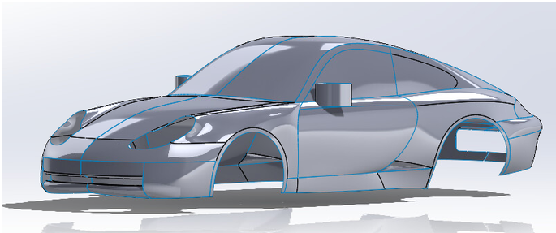

2024 · CAD · SOLIDWORKS · DESIGN
Porsche 911 Carrera CAD Model
Detailed CAD modeling project recreating a Porsche 911 Carrera using SolidWorks and mechanical modeling techniques.

Overview
This project involved recreating the geometry of a Porsche 911 Carrera as a detailed mechanical CAD model. SolidWorks was used to develop the vehicle geometry through 2D and 3D sketches, features, and surfaces. The model focused on accurately representing the major exterior features and proportions of the vehicle.